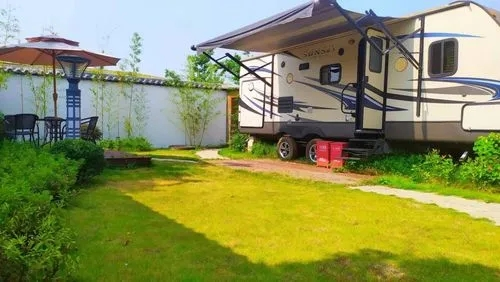
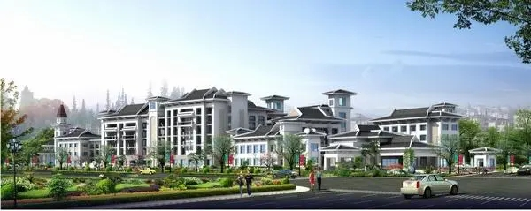

三木自游小镇
国家4A级旅游景区
开放时间：8:00~22:00
景点介绍
自遊小镇汽车主题乐园景区位于武夷山度假区东南方、崇阳溪畔，天际线被以大王峰为主体的武夷山脉所包围，建于2011年8月，总占地面积约470多亩。于2015年12月被福建省旅游景区质量等级评定委员会批准为“国家4A级旅游景区”。

景区以打造定制化综合型的旅游新业态，满足游客的个性化需求为出发点，着力建设3D汽车影院、汽车运动训练广场、房车帐篷露营地、汽车文化长廊、变形金刚景观、汽车度假酒店、温泉度假村、火车主题餐饮、武夷山景区游客集散中心、亲子游学教育基地、户外拓展基地、娱乐餐饮商业配套设施以及以汽车为主题的游乐项目等。

是一处以汽车文化为主题，以“一站接待、全程服务”为宗旨，融汽车文化、休闲娱乐、旅游集散、温泉养生与运动健身等功能为一体的综合型景区。
地理位置：武夷山市度假区仙凡界路60号